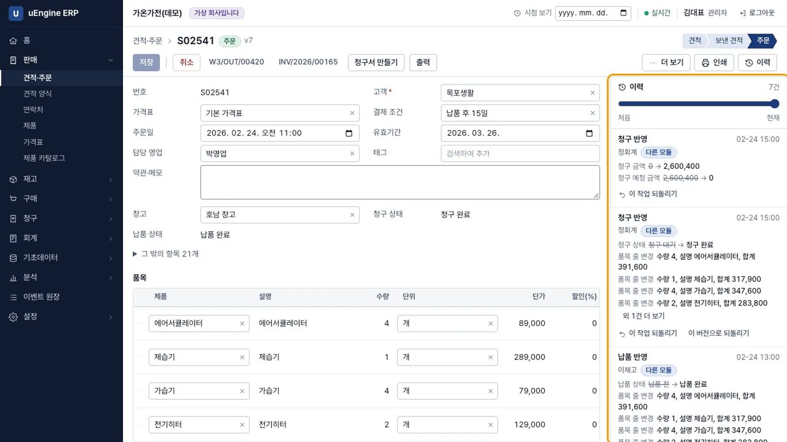
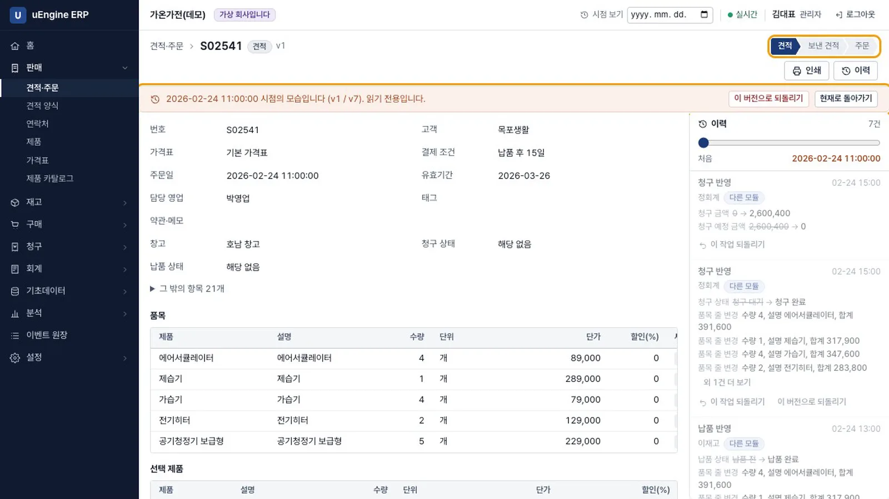
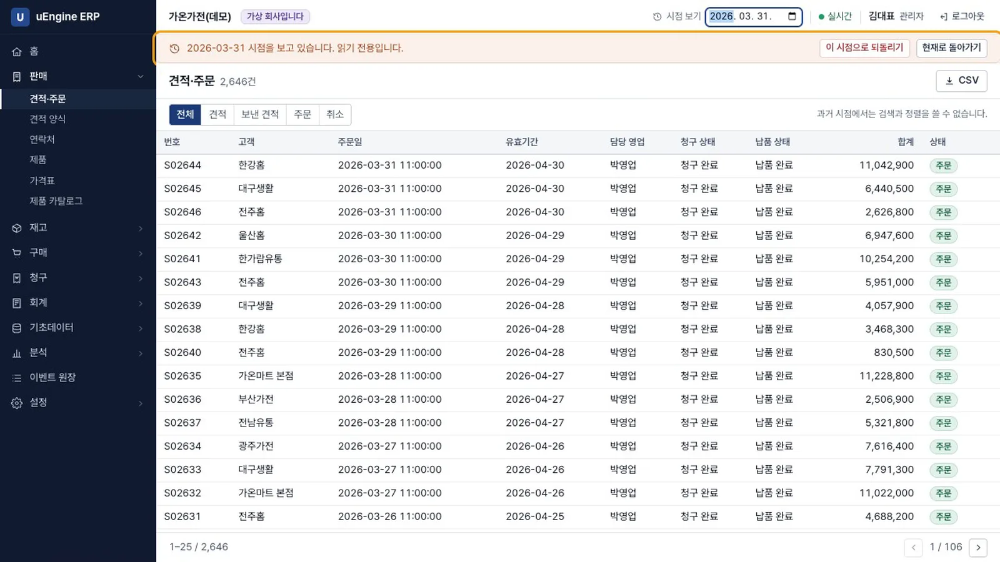
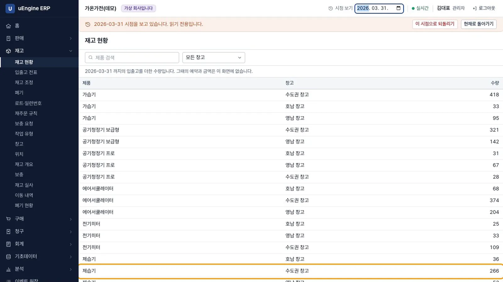
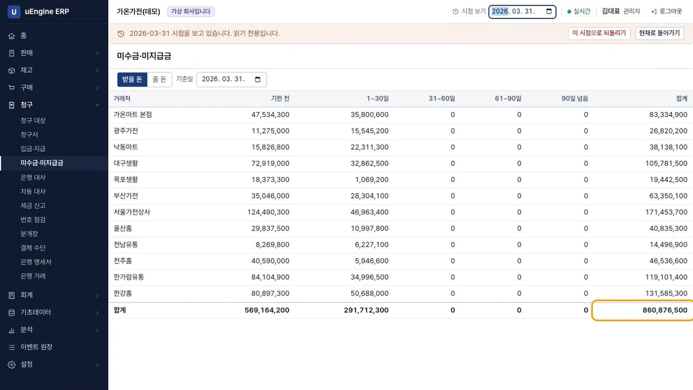
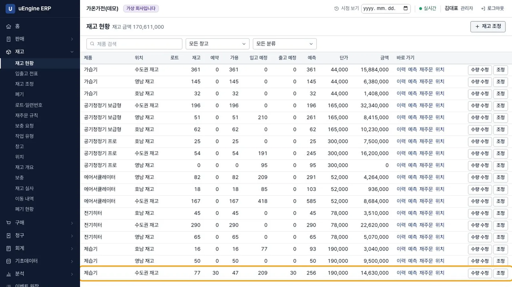
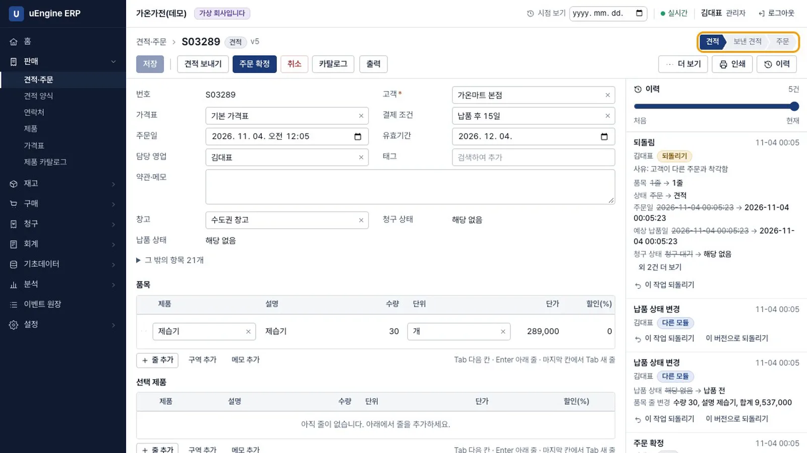
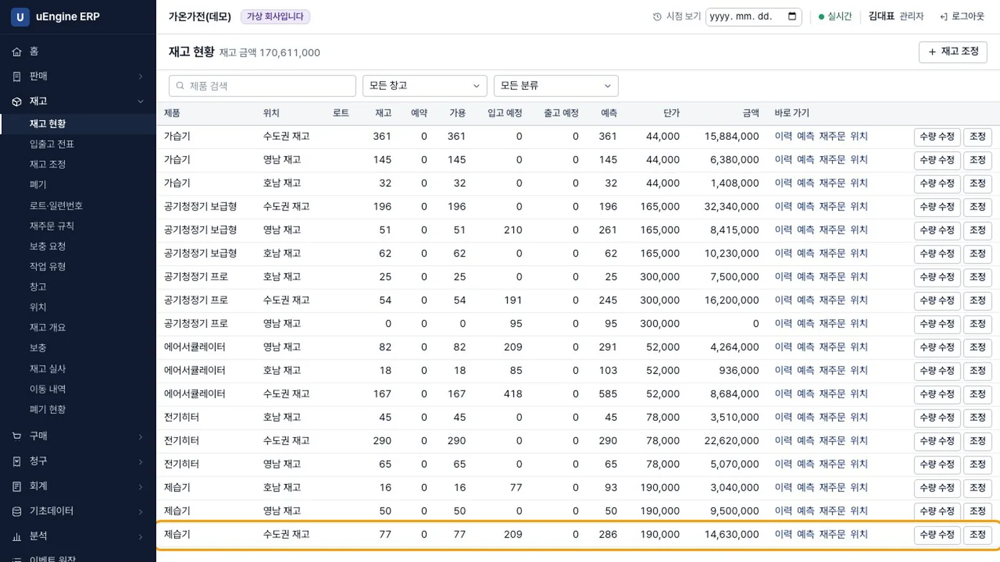
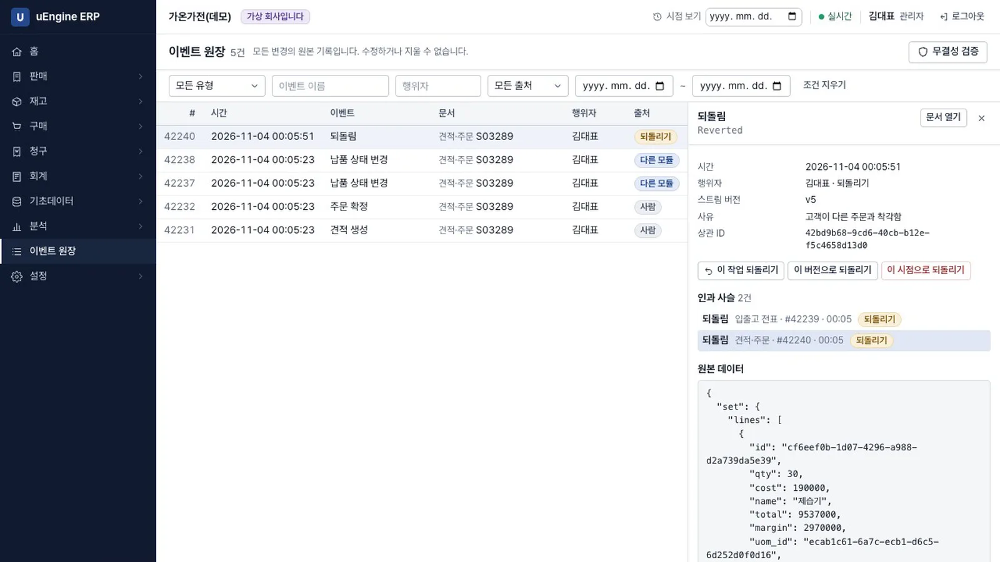
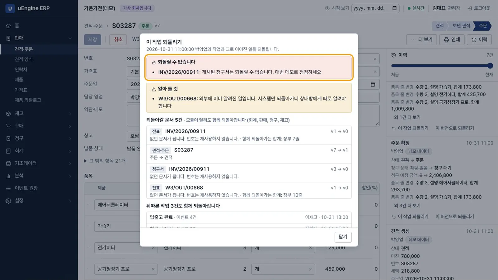

모든 변경이 이벤트로 쌓이므로 문서 하나든 회사 전체든 과거 모습을 그대로 볼 수 있습니다. 잘못 확정한 주문은 여러 모듈에 걸친 영향 범위를 확인한 뒤 되돌리고, 원장에는 사유가 남습니다.
무엇을 · 왜#
이벤트를 지우지 않습니다. 되돌리기는 스트림마다 Reverted 이벤트를 하나 새로 씁니다. 원장에 "그때 정말 확정됐었다"와 "누가 왜 되돌렸다"가 모두 남고, 되돌리기 자체도 다시 되돌릴 수 있습니다.
| 상황 | 동작 |
|---|---|
| 뒤에 다른 작업이 이어짐 | 미리보기에 연쇄 범위를 보여 주고, 동의 없이는 실행하지 않음 |
| 합계가 맞지 않음 | 차단. 문서 간 인과 관계가 없어도 재고가 음수면 막음 |
| 게시된 청구서 | 차단. 대변 메모로 정정하도록 안내 |
| 고객에게 이미 보낸 견적 | 경고. 시스템만 되돌아가니 상대에게 따로 알려야 함 |
| 미리보기 후 데이터 변경 | 충돌로 거부하고 다시 미리보기 |
| 구성원·회사 설정·모듈 | 되돌리기 대상에서 제외 |
| 권한 | 관리자만, 사유 필수 |
되돌린 문서의 번호는 재사용하지 않습니다.
먼저 알아 둘 것
- 이 장부터 3년치 기록이 있는 가상 회사를 씁니다. 회사를 만들 때 가상 회사(가온가전)로 먼저 체험하기를 고르면 됩니다(약 250 MB, 몇 분). 숫자는 모두 지어낸 것입니다. 화면 위쪽에
가상 회사입니다라고 표시됩니다. - 녹화에서는 같은 생성기를 시험 스크립트(
scripts/seed-demo.mjs)로 실행했습니다. 화면에서 선택하는 경로를 검증하는 시험은 저장소에 있지만, 클라우드에서 끝까지 실행해 보지는 않았습니다. - 녹화 중 가상 회사를 여러 번 새로 만들었는데 주문 건수는 3,287건으로 같았습니다. 잘못된 주문을 여러 번 만들면 문서 번호는 달라집니다.
따라 하기#
관리자(김대표)로 로그인해 시작합니다.
- 문서 이력 보기. 견적·주문에서
S02541을 엽니다. 오른쪽 이력에 이 문서의 변경 이력 7건이 있습니다. 재고나 청구 모듈이 변경한 이력에는다른 모듈이라고 표시됩니다.
문서 이력 - 슬라이더 옮기기. 이력 위의 슬라이더를 맨 앞으로 옮깁니다.
v1 / v7시점의 모습이 읽기 전용으로 나오고, 단계 표시는 견적입니다. 현재로 돌아가기를 눌러 현재 시점으로 돌아옵니다.
슬라이더 - 회사 전체 시점 보기. 위쪽 시점 보기에
2026-03-31을 넣습니다.2026-03-31 시점을 보고 있습니다. 읽기 전용입니다.라는 배너가 뜨고 새로 만들기가 사라집니다.
시점 보기 - 주문 목록 비교. 가상 회사를 막 만들었다면 오늘은 3,287건, 그 시점에는 2,646건입니다. 영상에서는 앞서 되돌린 주문 1건이 견적으로 남아 오늘 기준으로 3,288건이 보입니다. 과거 시점에서는 검색과 정렬을 쓸 수 없다고 안내합니다.
- 재고 현황 보기. 재고 현황에는 그날까지의 입출고를 합산한 수량이 나옵니다. 수도권 창고의 제습기 수량은 266입니다. 그때의 예약과 금액은 이 화면에 없다고 밝힙니다.

과거의 재고 - 미수금 보기. 미수금·미지급금의 기준일이 2026-03-31이 되고, 합계는 860,876,500입니다. 현재로 돌아가기를 눌러 현재 시점으로 돌아옵니다.

과거의 미수금 - 잘못된 주문 만들기. 고객
가온마트 본점, 창고수도권 창고, 제습기30개로 주문을 확정합니다. 재고 모듈이 출고 전표를 만들고 30개를 예약합니다. 재고 현황의 수도권 제습기는 재고 77, 예약 30, 가용 47입니다. 녹화에서는 이 주문을 명령으로 만들었습니다.
잘못된 주문 - 미리보기. 그 주문의 이력에서
주문 확정항목의 이 작업 되돌리기를 누릅니다. 미리보기에모듈이 달라도 함께 되돌아갑니다 (판매, 재고)와 함께 주문(주문 → 견적)과 출고 전표(없던 문서가 됩니다,재고 1줄)가 보입니다.
미리보기 - 사유 적고 실행. 사유 없이 누르면
되돌리는 사유를 적어 주세요.라고 합니다.고객이 다른 주문과 착각함을 적고 되돌리기를 누릅니다. 주문은 견적으로 돌아갑니다.
되돌린 뒤 - 재고 확인. 재고 현황의 예약이 0, 가용이 77로 돌아왔습니다. 출고 전표는 없던 문서가 됩니다.

재고 복구 - 원장 확인. 주문의 이벤트를 이벤트 원장에서 보면
주문 확정은 그대로 있고되돌림이 더해져 있습니다.되돌림을 누르면 사유와 함께 되돌아간 문서의 인과 사슬이 보입니다.
원장 - 막히는 경우. 게시된 청구서가 있는
S03287을 열고 같은 이 작업 되돌리기를 누릅니다.게시된 청구서는 되돌릴 수 없습니다. 대변 메모로 정정하세요라고 안내하며 실행을 차단하고, 실행 버튼은 표시하지 않습니다. 닫기를 눌러 나옵니다.
되돌릴 수 없음
확인 문제#
되돌리면 이벤트가 지워지나요?
지워지지 않습니다. Reverted 이벤트가 새로 쓰입니다. 그래서 그때 확정됐었다는 사실과 누가 왜 되돌렸는지가 함께 남고, 되돌리기를 다시 되돌릴 수도 있습니다.
과거 시점을 보는 동안 저장할 수 있나요?
없습니다. 쓰기 버튼이 모두 사라집니다. 데이터베이스에서 바뀌는 것은 없고, 그 시점의 이벤트를 다시 읽어 화면에 보여 줍니다.
게시된 청구서가 연결된 주문은 왜 되돌릴 수 없나요?
세금 신고된 문서를 시스템만 되돌리면 안 되기 때문입니다. 대변 메모로 정정해 정정한 사실 자체가 문서로 남게 합니다.